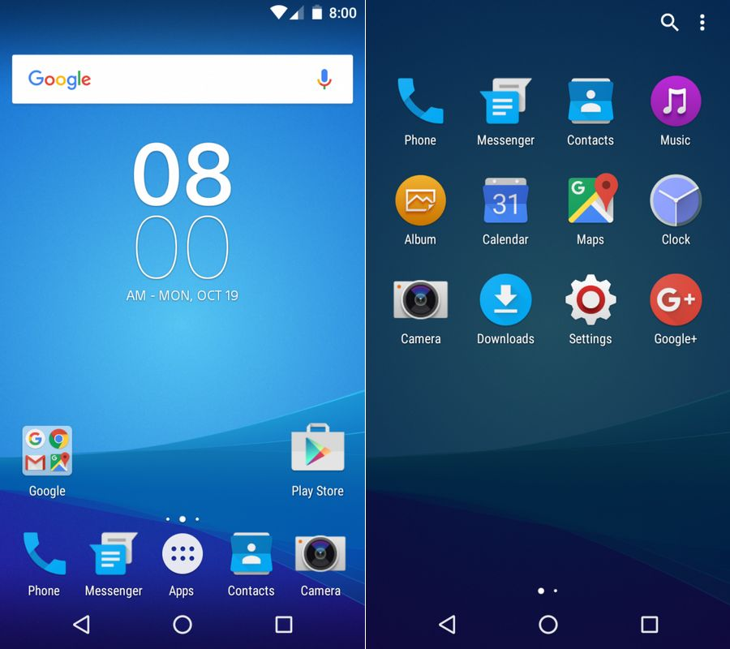

Alan Abramowski
Klasa 1 TIF
Android – system operacyjny z jądrem Linux dla urządzeń mobilnych takich jak telefony komórkowe, smartfony, tablety (tablety PC) i netbooki. W 2013 roku był najpopularniejszym systemem mobilnym na świecie. Wspomniane jądro oraz niektóre inne komponenty, które zaadaptowano do Androida opublikowane są na licencji GNU GPL. Android nie zawiera natomiast kodu pochodzącego z projektu GNU. Cecha ta odróżnia Androida od wielu innych istniejących obecnie dystrybucji Linuksa. Początkowo był rozwijany przez firmę Android Inc. (kupioną później przez Google), następnie przeszedł pod skrzydła Open Handset Alliance.
Android zrzesza przy sobie dużą społeczność deweloperów piszących aplikacje, które poszerzają funkcjonalność urządzeń. W sierpniu 2014 było dla tego systemu dostępnych ponad 1,3 miliona aplikacji w Google Play (wcześniej Android Market).
Według danych serwisu StatCounter z kwietnia 2017 roku Android miał największe udziały na rynku systemów operacyjnych.
